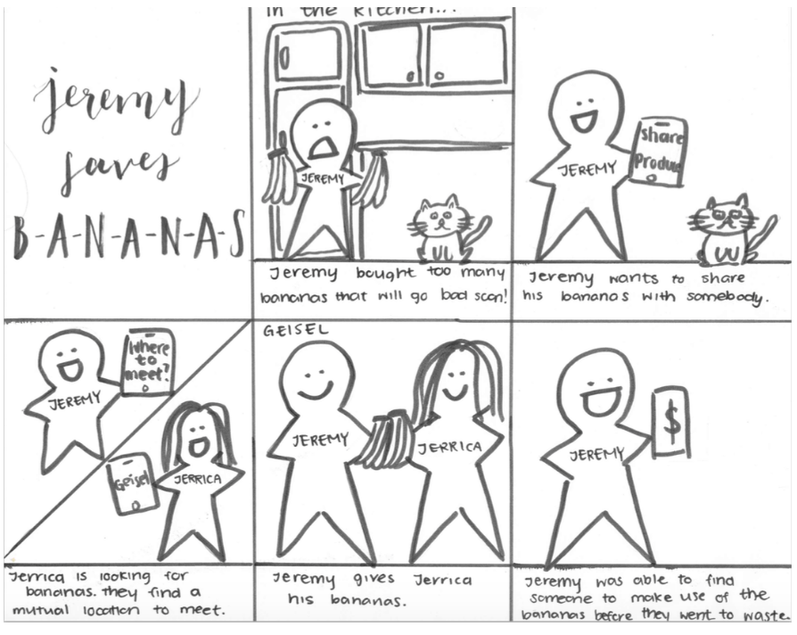
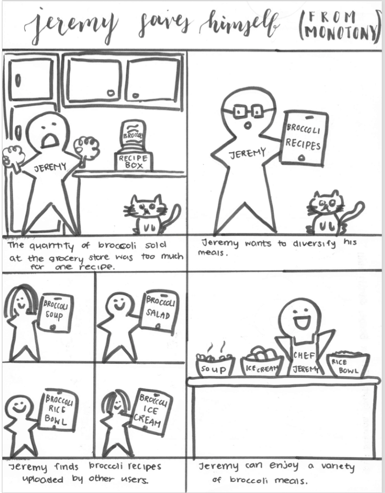
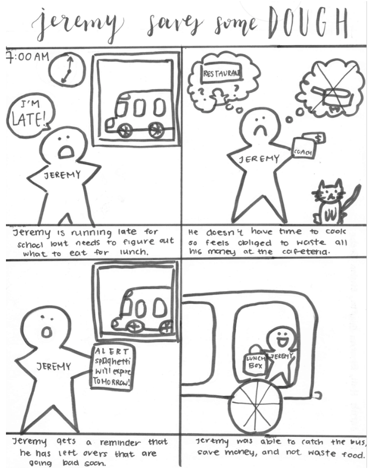
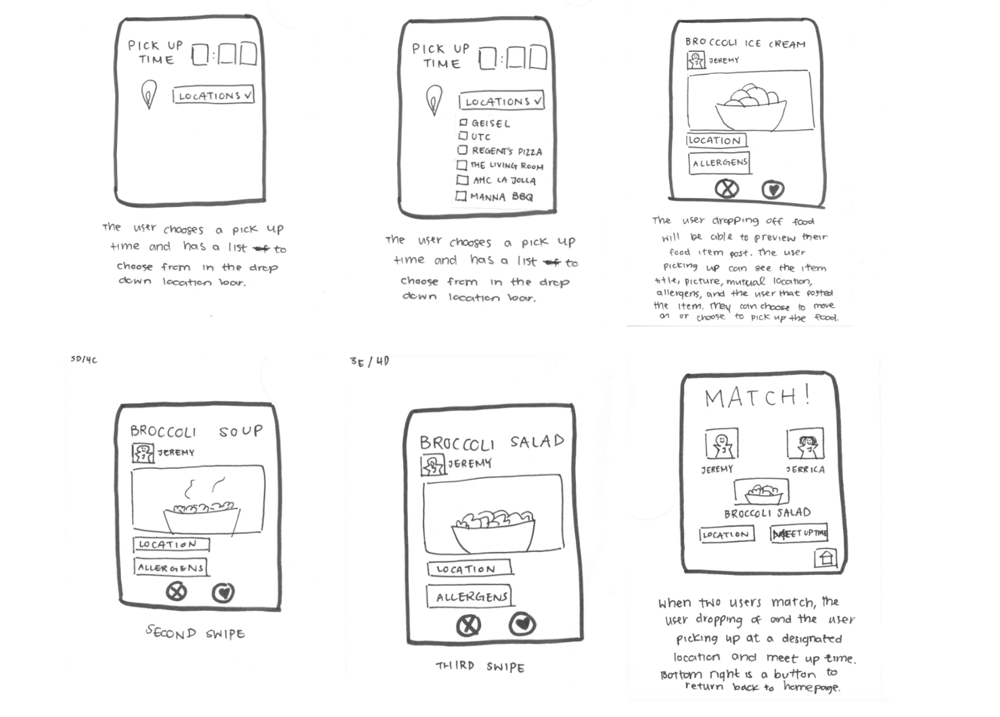

CiaoChow: A Case Study
Needfinding
COLLEGE students often choose to cook for themselves or meal prep ahead of time to save money and time. In order to “enhance health,” we asked three college students to cook a meal only using ingredients that they already had in their kitchen in order to observe problems they face while prepping and cooking a meal.
Lauren:
Since Lauren always meal preps, she did not want to waste food in order to complete the task. Lauren’s meals do not vary throughout the week, even if she wants to eat something else. While meal prepping at the beginning of the week is cost efficient, the meals are limited in scope.
Vivian:
Vivian typically eats frozen foods from Costco, and her apartment mates share produce. In a normal trip to Costco, Vivian and her apartment spend about $150. She says it’s cheaper to buy in bulk, but there is more pressure to eat the food since there is more food but the expiration date does not change. Vivian says that she has a lot of food waste for items that are not frozen, even with sharing food with her apartment mates.
Ava:
In terms of cooking, Ava says she generally tries to meal prep 1-2x per week. She has made it a goal this quarter to not buy food on campus because although it’s convenient, it is very expensive. So far, she has not eaten on campus. Sometimes she carries the food to campus, but if she wasn’t prepared to be on campus so late, she stays hungry until she gets home and can get food. Currently this is okay because she has control over finding time in her school schedule to come home and cook, but she knows that later in the quarter she won’t have this much control.
BASED off of the interviews, we identified the following user needs:
Storyboarding
BELOW are three storyboards derived from the user needs listed above.
  Paper Prototyping
BASED off of our storyboards, we chose to focus on the user need of reducing food waste. Below is a proposed paper prototype of an app that allows students to share their food. Factors on searching for food include mutual time & location, food type (prepared, packaged, or produce), and finally preference.
Wireframes
AFTER paper prototyping, we wanted to prototype two pages of the app in somewhat higher fidelity. The home page prompts users to choose whether they are looking to pick up or drop off food. The decision page is an example of a food item that would appear in a user's search for pick up. Below are wireframes for both of these pages.
to be continued...